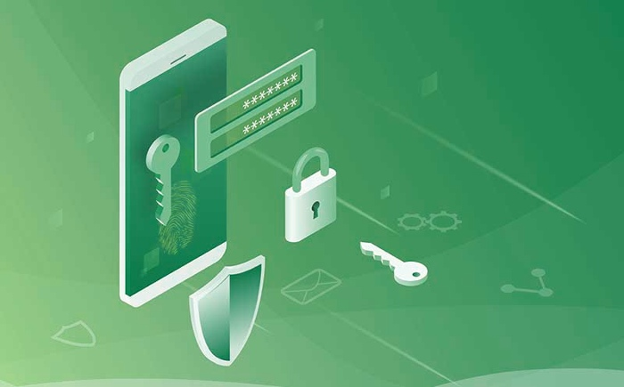
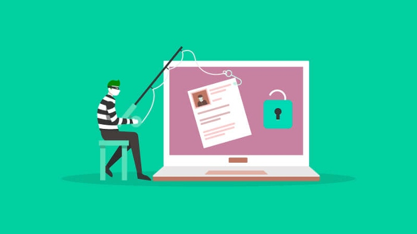

Improved Phishing Protection to Keep Your Information Safe
Phishing is the term given to the process of tricking users into revealing sensitive information to scammers. Phishing emails are one of the most common ways that scammers try to trick you into sharing personal information. But thanks to new phishing protection features in Microsoft Outlook, you'll soon have tools to protect yourself from these scams and stay safe online.
Employees, without sophisticated knowledge, are inclined to accidentally disclose sensitive information to hackers seeking to compromise your business.A crime involving the use of luring or pretended telephone or text messages to trick people into disclosing their personal information, such as passwords and credit/debit card details. But with the correct knowledge, you may recognize the cybercriminals without the need to search for details.

What Do Phishers Do with Your Data?
Once your information is obtained, it may be used for unlawful objectives, resulting in identity theft and financial loss. Implementing your security precautions is quondamely useless if your employees click on malicious links that are found online or coming from friends or clients - releasing the keys to your organization to them. Hackers try to trick your workers into installing malicious software or the release of confidential information by contacting them and claiming to be from your IT department. Advise your employees to be wary about being contacted by a suspicious caller. Criminals have used a wide range of phishing techniques since the beginnings of phishing, including emailing and website phishing as well as voice phishing, smishing and SMS phishing.
Common Phishing Emails
1. Too Good to be True
Profitable offers and captivating statements are designed to attract people's immediate attention. Many will claim that a prize-winning of some kind, such as an iPhone, a trip, a lottery, some extravagant prize, if it presents itself as too impressive, it's probably not genuine. Never disclose your passwords over email.
2. What’s the Rush?
A common scam utilized by cybercriminals is to offer you a limited time to take advantage of the wonderful offers. Some of them voice that you have no opportunities left and others will tell you that your account will be suspended until you update your personal information right away. Confirmed businesses should not observe these emails. Reliable companies give you lots of coping with everything you'd like to change, and will never initiate a chat when making use of an insecure email client.
3. Hyperlinks
Sharing links as disguises can make them appear legitimate. Hovering over the hyperlink shows the real URL the link will take you to upon clicking it. Often, it will take you to a different site.
4. Attachments
Attachments can be tricky to open. If you weren't expecting it, don't be the first person to open it! Attachments often contain harmful payloads like ransomware or other viruses. The only sheet of paper file type that you'll always be able to open is a .txt file.

5. Unknown Sender
All individuals become curious. Regardless of whether you receive an email from someone you do know or someone you don't know, if you see anything out of the ordinary, unexpected, or suspicious, do not click on it. Don't release intellectual properties even by mistake. Any cybercriminal will go out of their way to obtain sensitive company data. Sharing a screenshot of a whiteboard, documents or a screen with a computer monitor in the background will all unintentionally reveal sensitive information about your company to people outside of the firm.
It's critical that businesses use valid certificates and avoid putting sensitive information on the web. Also, it's important to educate employees about how to recognize phishing emails. Businesses should set up email filters that automatically scan incoming emails for phishing links.
In conclusion, scams and mistakes happen all the time, but it's important to teach yourself and others how to protect yourself. One of the easiest ways to avoid scams against you or your company is to not click on links in emails. Instead, hover your mouse over the link to see what it will take you to. If it appears to be a link to a website you don't know, don't click.